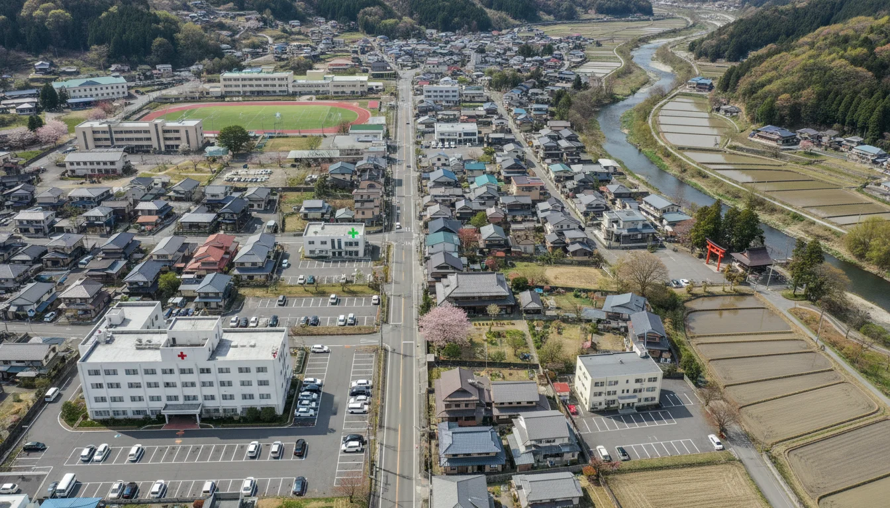
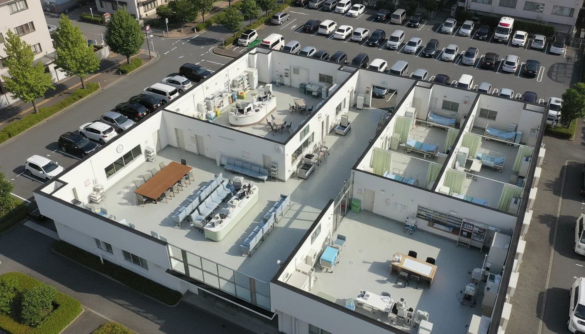
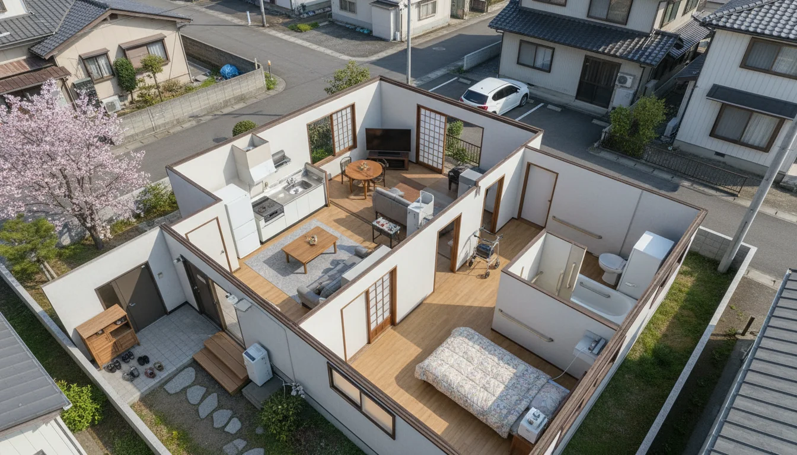

在宅療養を支える訪問看護
COPD事例 〜聖隷一男さんの物語〜
患者：聖隷一男さん（78歳）
疾患：COPD（慢性閉塞性肺疾患）
治療：在宅酸素療法
全12シーン・77カット・10問のクイズ
学習を開始する
MAPで場所を選んでください
光っているマーカーをクリック

🏥
総合病院
🏠
聖隷さん宅
💊
薬局
👩⚕️
訪問看護ステーション
🩺
クリニック
病院内MAP
場所をクリックしてください
← 街並みMAP

🛏️
病室
🪑
待合室
👩⚕️
ナースステーション
自宅内MAP
場所をクリックしてください
← 街並みMAP

🛋️
リビング
🛏️
寝室
🛁
浴室
← MAP
← 戻る
次へ →
BGM ON
音声 ON
📚
理解しました
❓
確認クイズ
回答する
次へ進む
🔄 最初から
📋 シーン選択
📋 シーン選択
閉じる